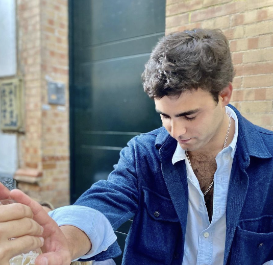

🎖️ Integrantes

Luis Álvarez
Cargo: Hermano Mayor.

Guillermo Baena
Cargo: Teniente Hermano Mayor.
Enrique Machado
Cargo: Delegado de bares y festejos.
Javier Marín
Cargo: Mayordomo.
Javier Sánchez
Cargo: Delegado de redes sociales.
Pablo Angelino
Cargo: Delegado de carteles.
Ramón Luque
Cargo: Delegado de birracrucis.